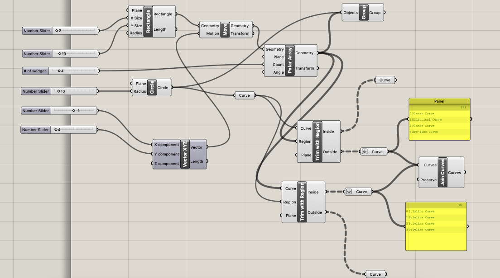
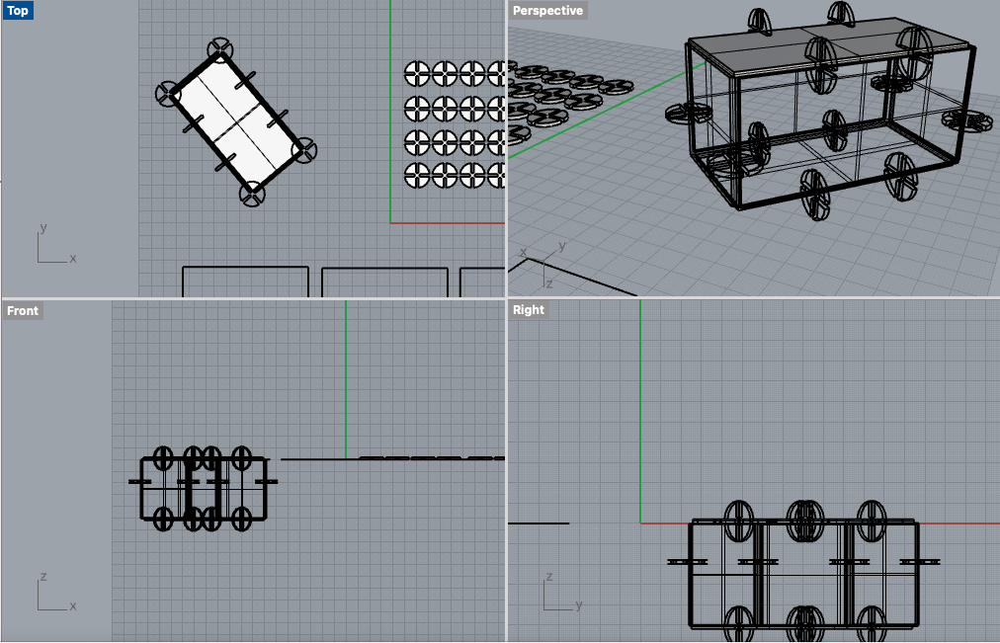
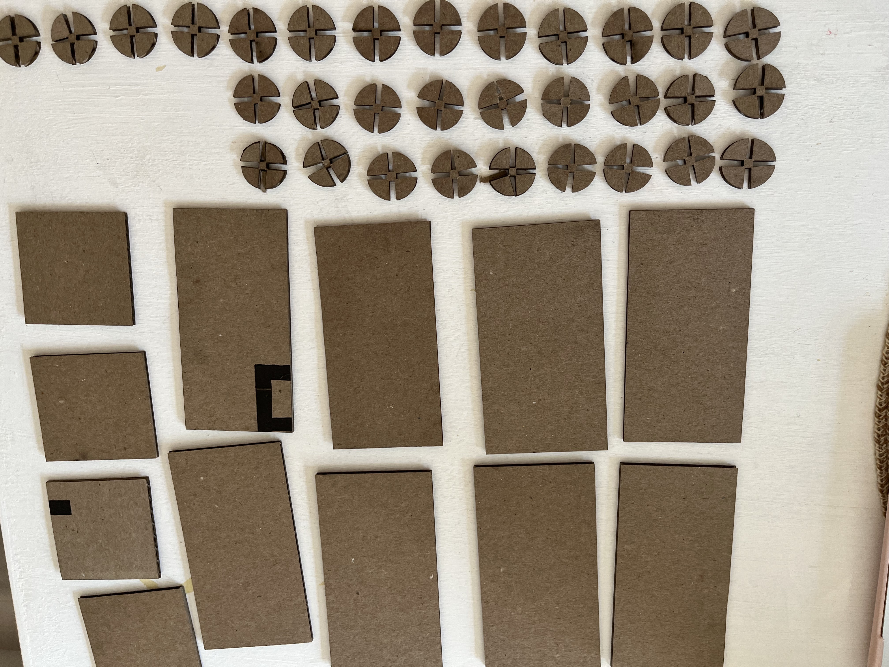

Checking the Dimensions in Rhino

As with the last project, I measured my cardboard using calipers to understand that I wanted a 2mm width when I extruded the final shape. This helped me to know how large to make my notches. In order to create the parametric models in Grasshopper, I watched a few tutorials - and the tutorial made by our TA was a great help! I found it difficult to understand the logic and equations so I attempted to do what I had already learned in Rhino and make a simple shape with notches using the circle, rectangle, and array commands.

I made one design that I replicated and extruded into 3D shapes in Rhino in order to understand if the pieces would fit together. One thing that I noted was that it was much easier to align the pieces in Rhino than it was to assemble the structure in 3D once the elements were laser cut. This was because the top of the box was not easy to place on. Given more time and availability of a working laser cutter, I would go back and redesign this and perhaps make different connectors for the top of the lid or add notches to the rectangular lid itself to ease with assembly.

When I went to laser cut, I used a Speed 25% and Power 50%

In the end, the final product came out fitting together and securely despite the difficulty of assembly to get a top piece on! I ended up just adjusting the design to make open-topped boxes.
Source Files:
Grasshopper: https://github.com/Mary-Gower/HCDE/blob/master/Grasshopper-laser-cut-1.gh
Rhino: https://github.com/Mary-Gower/HCDE/blob/master/grasshopper.3dm
AI: https://github.com/Mary-Gower/HCDE/blob/master/grasshopper_laser-print.ai
Shout Outs: Nick Moolenijzer helped me understand the github repositories a bit better - although I'm still learning! Jody Laflen was a help when I ran into her in the Mill and offered me a link to a place where she has been finding resources to help her learn the software we are using!